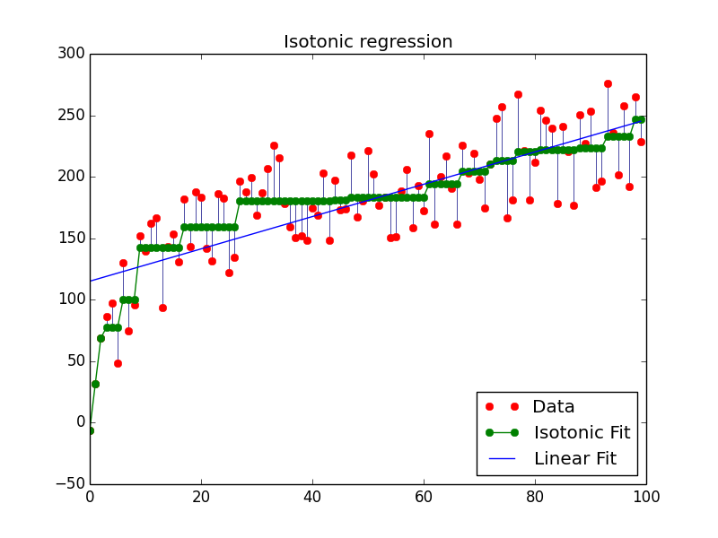

Isotonic Regression¶
An illustration of the isotonic regression on generated data. The isotonic regression finds a non-decreasing approximation of a function while minimizing the mean squared error on the training data. The benefit of such a model is that it does not assume any form for the target function such as linearity. For comparison a linear regression is also presented.
Python source code: plot_isotonic_regression.py
print(__doc__)
# Author: Nelle Varoquaux <nelle.varoquaux@gmail.com>
# Alexandre Gramfort <alexandre.gramfort@inria.fr>
# Licence: BSD
import numpy as np
import matplotlib.pyplot as plt
from matplotlib.collections import LineCollection
from sklearn.linear_model import LinearRegression
from sklearn.isotonic import IsotonicRegression
from sklearn.utils import check_random_state
n = 100
x = np.arange(n)
rs = check_random_state(0)
y = rs.randint(-50, 50, size=(n,)) + 50. * np.log(1 + np.arange(n))
###############################################################################
# Fit IsotonicRegression and LinearRegression models
ir = IsotonicRegression()
y_ = ir.fit_transform(x, y)
lr = LinearRegression()
lr.fit(x[:, np.newaxis], y) # x needs to be 2d for LinearRegression
###############################################################################
# plot result
segments = [[[i, y[i]], [i, y_[i]]] for i in range(n)]
lc = LineCollection(segments, zorder=0)
lc.set_array(np.ones(len(y)))
lc.set_linewidths(0.5 * np.ones(n))
fig = plt.figure()
plt.plot(x, y, 'r.', markersize=12)
plt.plot(x, y_, 'g.-', markersize=12)
plt.plot(x, lr.predict(x[:, np.newaxis]), 'b-')
plt.gca().add_collection(lc)
plt.legend(('Data', 'Isotonic Fit', 'Linear Fit'), loc='lower right')
plt.title('Isotonic regression')
plt.show()
Total running time of the example: 0.08 seconds ( 0 minutes 0.08 seconds)